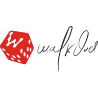
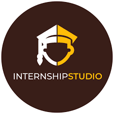
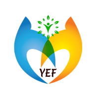

Experience
-

WalkOver
WalkOver University Program Intern
Training + Internship
Jun 2021 - Present : 2 Months -
Chai Sutta Bar
Data Analyst Intern
Internship
Jun 2021 - Present : 2 Months -
Dell
Dell Campassador
Internship
Nov 2020 - Jun 2021 : 8 Months -

Internship Studio
Machine Learning
Training + Internship
Jul 2020 - Sep 2020 : 3 Months -
International MUN
Official Campus Ambassador
Internship
May 2020 - Aug 2020 : 4 Months -

Youth Empowerment Foundation
Fund Raiser
Volunteering
Apr 2020 - May 2020 : 2 Months -
Internshala
-
Internshala Training Captain
Internship
Jan 2020 - Apr 2020 : 4 Months -
Internshala Student Partner
Internship
Dec 2019 - Apr 2020 : 5 Months
-
-

Bolt IoT
Campus Ambassador
Internship
Nov 2019 - Mar 2020 : 5 Months